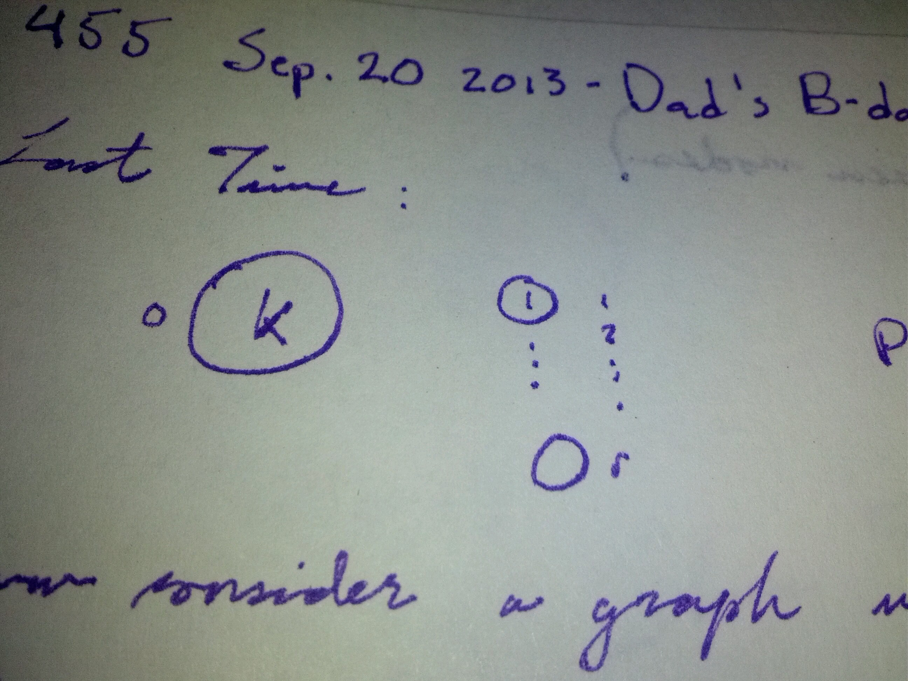
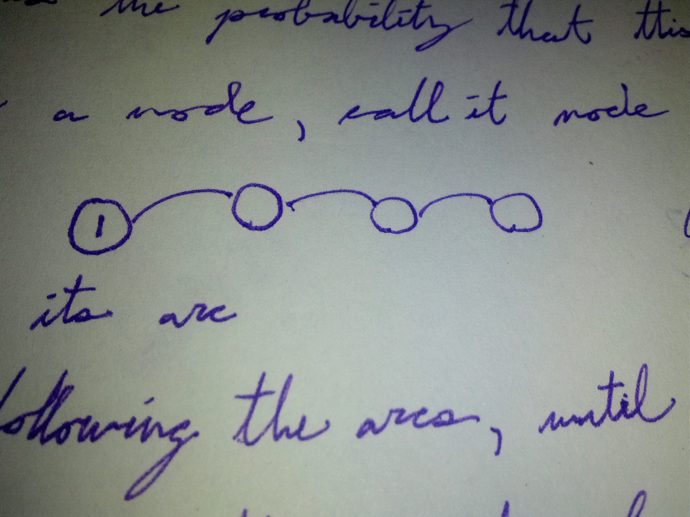

Another Graph with Conditioning
Last Time:

\[P(connected) = \frac{k}{k+r}\]
Now consider a graph with \(n\) nodes.
Each node, independently, chooses a node at random (equally likely, including itself), and draws an arc between itself and that node.
What is the probability that this graph is connected?
Fix a node, call it node 1.
Follow its choice arc, and keep following the path of choice arcs until you reach the same node twice.

Let \(N\) denote the number of nodes obtained in the path. Possible values of \(N\) are \(1,2,3,...,n\).
Condition on \(N\) to find \(P(connected)\).
Given \(N=k\):
if \(k \neq n\), the graph is connected if one of the “other” \(n-k\) nodes does not choose a node in the subgraph we constructed by following the choices of each node in that subgraph.
This is the same mechanism as the previous example. (weight \(k\) for node 0, and \(r=n-k\).)
Therefore,
\[P(connected|N=k) = \frac{k}{k+n-k} = \frac{k}{n}\]
So,
\[P(connected) = \frac{1}{n}\sum\limits_{k=1}^n kP(N=k)\]\[= \frac{E[N]}{n}\]
and
\[E[N] = P(N=1)+\]\[P(N=2) + P(N=2) +\]\[...\]\[P(N=n)+...+P(N=n)\]\[=P(N \geq 1)+P(N \geq 2)+...+P(N \geq n)\]\[= \sum\limits_{i=1}^n P(N \geq i)\]
Now,
\[P(N \geq i) = P(\text{first }i-1\text{ nodes choose previously unchosen nodes})\]\[=(\frac{n-1}{n})(\frac{n-2}{n})...(\frac{n-(i-1)}{n})\]\[= \frac{1}{n^{i-1}}\frac{(n-1)!}{(n-i)!}\]
So,
\[P(connected) = (n-1)! \sum\limits^n_{i=1}\frac{1}{(n-i)!n^i}\]
Substituting \(j=n-i\),
\[= (n-1)! \sum\limits^n_{i=1}\frac{1}{j!n^{n-j}}\]\[= \frac{(n-1)!}{n^n}\sum_{j=0}^{n-1}\]
Some approximations
- if \(X~Poisson(\lambda_i)\), \(i=1,...,n\) and \(X_1, ... X_n\) are independent, then \(X_1+...+X_n~Poisson(\lambda_1+...+\lambda_n)\)
In particular, if \(X~Poisson(n)\), then \(X\) has the same distribution as \(X_1+...+X_n\) where \(X_i~Poisson(1)\) are i.i.d.
- Central limit theorem
if \(X_1,X_2,...\) are i.i.d. with mean \(\mu\), variance \(\sigma^2<\infty\), then,
\[\frac{\sum_{i=1}^n X_i - n\mu}{\sqrt n \sigma} \to N(0,1) \text{ as }n\to\infty\]
First note that if \(X~Poisson(n)\), then
\[\begin{split}P(X<n)=\sum_{i=0}^{n-1} \frac{n^i}{i!}e^{-n}\end{split}\]
Moreover, since \(X~X_1+X_2+...+X_n\) where the \(X_i~Poisson(1)\) i.i.d. by the central limit. Then, this is approximately normal since the mean of the distribution of \(X\) is \(n\) approximately \(\frac{1}{2} \approx P(X<n)\)
i.e.
\[\sum_{i=0}^{n-1} \frac{n^i}{i!}e^{-n} \approx \frac{1}{2}\]
or, in the form we want,
\[\sum_{i=0}^{n-1} \frac{n^i}{i!} \approx \frac{e^n}{2}\]
One more:
- Stirling’s approximation
Let \(X ~Poisson(n)\).
Then
\[P(X=n)=\frac{n^n}{n!}e^{-n}\]\[\begin{split}=P(n-1<X\leq n)\end{split}\]\[\begin{split}=P(\frac{n-1-n}{\sqrt n} < \frac{X-n}{\sqrt n} \leq \frac{n-n}{\sqrt n})\end{split}\]\[\begin{split}\approx P(-\frac{1}{\sqrt n}<Z\leq 0)\end{split}\]
where \(Z~N(0,1)\)
\[=\int\limits_{-\frac{1}{\sqrt{n}}}^0 \frac{1}{\sqrt{2\pi}}e^{\frac{-t^2}{2}} dt\]
for \(n\) big,
\[\approx \frac{1}{\sqrt n} \frac{1}{\sqrt{2\pi}}\]
So,
\[n! \approx \sqrt{2\pi}n^{n+\frac{1}{2}}e^{-n}\]
and \((n-1)! \approx \sqrt{2\pi}(n-1)^{n-\frac{1}{2}}e^{-(n-1)}\)
So,
\[P(connected) \approx \frac{\sqrt{2\pi}(n-1)^{n-\frac{1}{2}}e^{-(n-1)}e^n}{n^n * 2}\]\[= \sqrt{\frac{\pi}{2}}(\frac{n-1}{n}^n)\sqrt{\frac{1}{\sqrt{n-1}}}e\]\[(1-\frac{1}{n})^n \approx e^-1\]\[\approx \sqrt{\frac{\pi}{2(n-1)}}\]